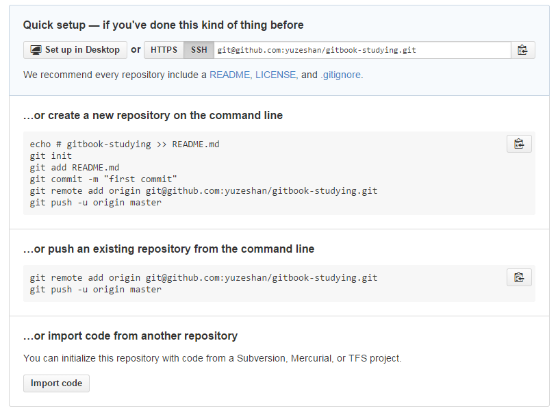

发布到github仓库
GitBook.com为每本书籍都创建了一个Git项目，并且使用这个Git项目来管理书籍源码（注意：这里的源码是指所有用户提交的内容）。正如在编辑书籍中介绍的那样，我们可以通过向书籍的Git项目提交内容来更新书籍。
另外，GitBook.com 还可以集成GitHub，所以用户可以将书籍的源码通过GitHub 上的项目来管理(而且在github上编辑时也可以同步到GitBook.com上对应的仓库)，这样可以使用GitHub 带来的各种优点，例如：
- 其它用户可以fork
- 用户可以点赞，获得更新提醒
- 用户可以贡献自己的内容
等等
这里，接着之前的实例，将使用GitHub中的项目来替代GitBook.com上的项目:https://git.gitbook.com/tao-cloud/gitbook-studying.git.分为以下三大步骤:
在Github上创建仓库，并设置
- 登录Github账户，创建仓库
gitbook-studying; - 显示如下: 
- 将建好的仓库克隆到本地，但是使用cmd的时候，发现clone被拒绝，未找到原因，于是换作 git bash 同样使用cd进入书籍目录(E:\gitbook\gitbook-studying-github，此为新的空目录)
- 运行命令:
$git clone git@github.com:yuzeshan/gitbook-studying.git,在此目录生成了gitbook-studying/.git文件 - `$cd gitbook-studying，此时git bash目录结构为 /e/gitbook/gitbook-studying-github/gitbook-studying
在Gitbook.com上为该项目设置Github集成
首先，到Gitbook.com页面，将书籍的Git 项目设置为GitHub 上的项目，进入书籍属性页面，找到"GitHub" 图标，如下图：
输入将要使用的GitHub 上的项目，注意是公开的项目，如下图：

保存后，可以看到之前不可点击的"Add a deployment webhook" 按钮已经可以点击了，这个按钮表示：每当用户配置的GitHub 上的项目更新时，自动更新Gitbook.com书籍！
将本地书籍导入Github上对应仓库
现在，将书籍原来的Git 项目内容导入到新建的GitHub 中的项目中，步骤如下:
- 将之前编辑的书籍目录为
E:\gitbook\gitbook-studying中除.git文件，全部拷贝到克隆的目录中，即E:\gitbook\gitbook-studying-github\gitbook-studyin中； - 将已经编辑好的书籍文件，用git add/commit命令依次添加，提交后;
- 接下来将书籍仓库与远程github连接到一起，运行命令:
git remote add github https://github.com//yuzeshan/gitbook-studying.git(注意:并不是git remote add origin https://github.com:yuzeshan/gitbook-studying.git,也许不运行此命令也可，因为克隆的文件本身就关联了，未尝试。。。)； - 最后，将书籍仓库push到github仓库上，运行命令：
git push -u github master; - git push命令中的-u表示将本地master分支的上游分支设置为github/master，所以以后修改了本地master分支后，git push将推送到github上，而非原来的
git remote add gitbook https://git.gitbook.com/yuzeshan/gitbook-studying.git。
经过以上步骤后，就可以在本地修改文件，直接add，commit，然后push上github仓库上即可，修改github仓库的同时，gitbook.com上对应的书籍也会同步更新.